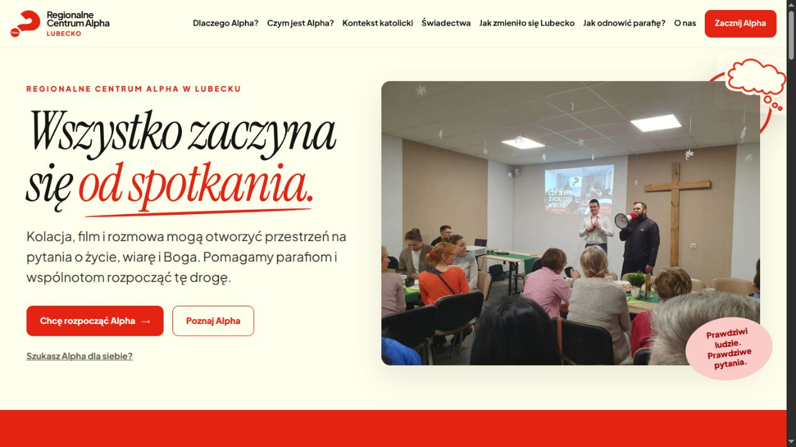
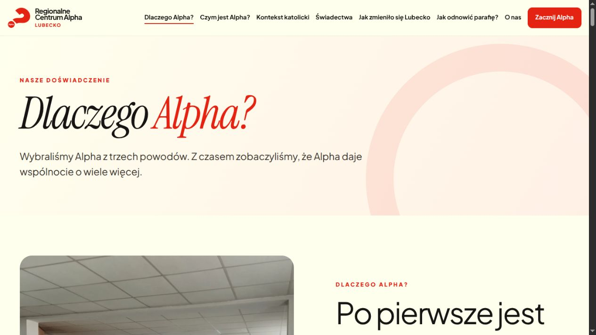
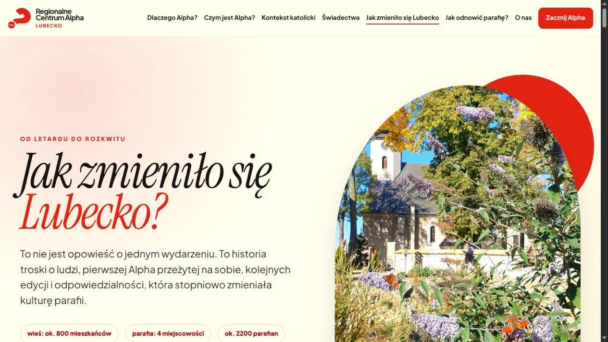
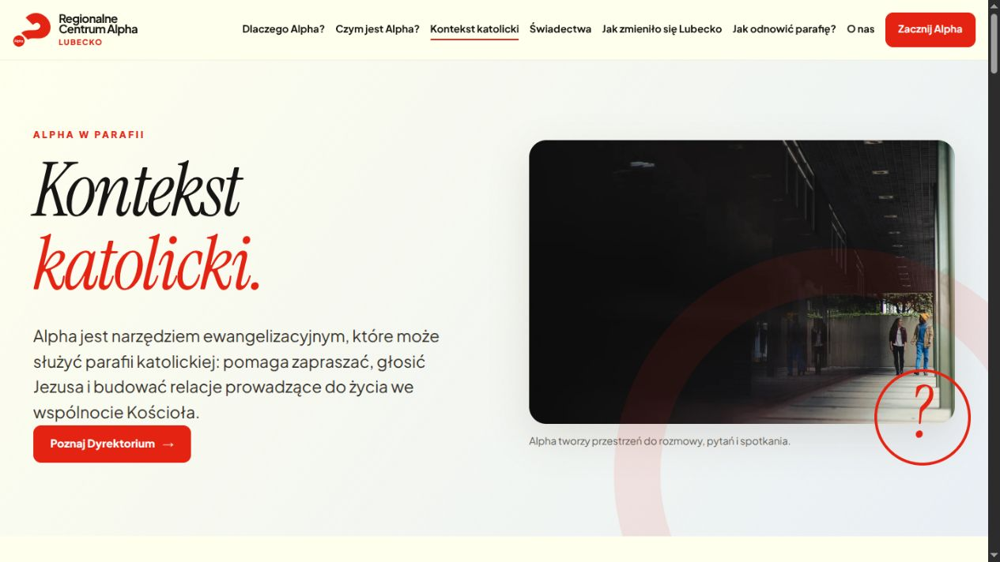
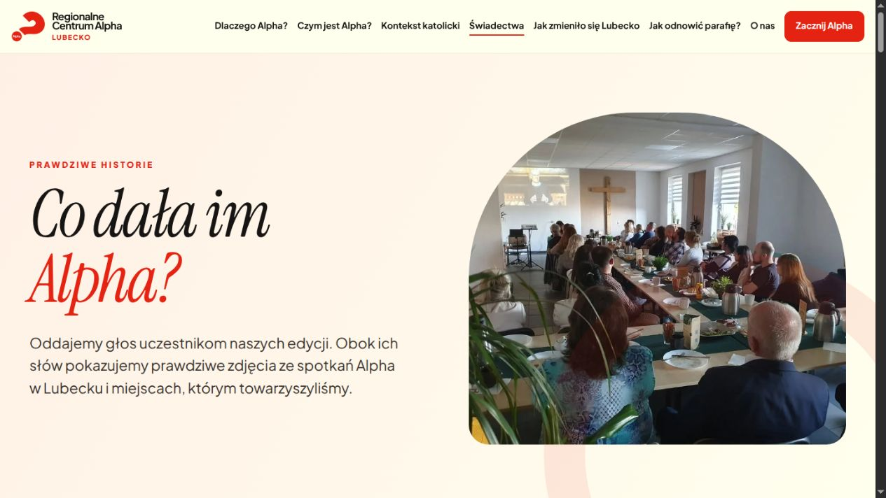

01
Promujemy Alpha
Pokazujemy proste narzędzie ewangelizacji.
Zebraliśmy w jednym miejscu nasze doświadczenie prowadzenia Alpha i wspierania kolejnych parafii.

Towarzyszymy parafiom i wspólnotom od pierwszej rozmowy do samodzielnego prowadzenia kursu.
Pokazujemy proste narzędzie ewangelizacji.
Dzielimy się praktyką i sprawdzonymi rozwiązaniami.
Pomagamy przeprowadzić pierwszą edycję.
Opisaliśmy, dlaczego ją wybraliśmy i co z czasem zaczęła zmieniać w naszej wspólnocie.

Pokazujemy drogę od pierwszych pytań i odwołanych kursów do kolejnych edycji Alpha, nowych liderów i otwartej parafii.

Materiały dla świeckich i księży oraz głosy osób, które przeżyły Alpha.


Jeśli myślisz o Alpha w swojej parafii, chcesz przeszkolić zespół albo po prostu porozmawiać — odezwij się do nas.